The Ultimate Guide to BMT
Welcome Recruits! This guide will detail everything you need to know to about the BMT course. Through this course you will be taught the basics of solidering, which includes everything from folding blankets to throwing live grenades.
Getting Started
Duration
| PES status | IPPT score | BMT duration |
|---|---|---|
| PES A/B1 | >= 61 points | 9 weeks |
| PES A/B1 | < 61 points | 8 weeks (PTP) + 9 weeks |
| PES B2/B3/B4 | Not applicable | 9 weeks |
| PES BP | Not applicable | 19 weeks |
| PES C/E | Not applicable | 9 weeks |
Mono-Intake?
The dreaded mono-intake? What is it and what does it mean for me?
A mono-intake is essentially a unit that you have been pre-assigned to e.g. Armour, Infantry, Guards. Your intake batch will stick together for the entirety of your NS duration (BMT, Unit, Reservist) as you guys will be replacing an outgoing batch.
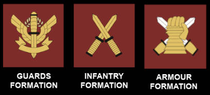Generally what this means for you, if you happen to land in a mono-intake, is a more demanding BMT. Since you will be trained by Sergeants from your specific unit and held to the standard of that unit. On top of that, there may be extra unit specific training or physcial standards that you will be expected to attain.
Packing List
In the table below I have detailed the list essential items that you should pack for your first day. In addition to this, you can pack your personal items too such as: Facial Wash, Books, and even a tennis ball (for fun).
| Item | Quantity |
|---|---|
| Clothes Hanger with clips | 6 pcs |
| Underwear | 6 pcs |
| Slippers | 1 pair |
| Liquid Detergent | 2 pcs |
| Shampoo and Body Wash | 1 set |
| Snacks | 3 pax |
| Toothpaste | 1 tube |
| Instant Kiwi (Optional) | 1 tube |
| Health booklet | 1 pcs |
| Earphones | 1 pair |
| Eye Masks for sleeping (Optional) | 1 pcs |
| Power Bank | 2 packs |
| Wet Tissue | 2 packs |
| Cash (and coins) | 10 dollars |
Enlistment Day
On your enlistment day, show up in long pants and covered shoes, since you will be taking the oath of allegiance in camp. Show up at the reporting venue, after which you and your guests will take the ferry to Tekong where there will be a tour of the bunk and other facilities. After the tour you will take the oath and depending on your reporting time there may be a meal provided.
After your parents/guests have left is when the fun begins; i.e your Sergeants will start shouting. You will then be directed to collect your equipment all of which neatly packed in a massive black duffel bag. Now with your new equipment, your commanders will go through all the equipment with you, they will show you how to wear the uniform, fiddle with the garters and facilitate any change of sizes. By this time you would already have met and gotten familiar with your buddy, it is in your best interest to get along with him as a good reliable buddy can make or break your BMT experience.
A typical day in BMT
| Time | Activity |
|---|---|
| 0500 | Reveille (Wake up) |
| 0530 | Breakfast + First Parade |
| 0800 | Day Activity 1 or PT |
| 1200 | Lunch |
| 1400 | Day Activity 2 or PT |
| 1830 | Dinner |
| 2000 | Last Parade + Routine Orders for the next day |
| 2200 | Lights Out |
The above timetable shows a typical day in BMT, there is usually 2 main activities for the day: one before and after lunch. On top of physical trainings, you will also be spending a lot of time in other ad-hoc admin tasks such as company interviews, recruitment talks and area cleaning.
Pro tips:
- Area Cleaning: No matter how clean you think it is - your sergeants will always find a reason to pump you
- Get to the shower fast, to skip the queue
- Always keep a folded smart 4 in your locker
- Black tape all your lose ends - on your assult bag and LBS
- Don't bother tying your boot laces - just shove them into your garters
- Remeber that your sergeants are shouting at you because they're trained to - not out of spite
As a recruit you can expect about 2 hours of admin time a day, usually after dinner or throughout the day after activities as you will be given time to rest and wash up.
SAF Terminology
Acronyms
| ACRONYM | DESCRIPTION |
|---|---|
| SBA | Stand by area - Bunk inspection |
| SOL | Stoppage of Leave - The number of days you cannot go home |
| RSI / RSO | Report sick Inside / Outside - Depending on where you visit the doctor |
| FBO | Full battle order - Helmet, LBS, Field pack, and rifle |
| Coy | Short for Company - Usually consists of 4 platoons in BMT | ORD | Operational Ready Date - When you have completed your full time National Service |
| LD | Light Duty - Excused from strenuous activities |
| TS | Total Strength - The total number of recruits in your platoon |
| CS | Current Strength - The number of recruits currently present in your platoon |
| PS | Participating Strength - The number of recruits participating in the next activity |
| AWOL | Absent without offical leave - To be uncontactable and Absent without leave |
Ranks
Commands in Malay
| COMMAND | ACTION |
|---|---|
| Sedia | Stand at attention |
| Diam | Stand at attention and NO movement |
| Kekiri/Kekanan Pusing | Left/Right turn respectively |
| Dari Kiri, Cepat Jalan | Left foot first, quick march |
| Berhenti | Halt - Stop Marching |
| Hentak Kaki Cepat Hentak | March on the spot | Ke Kanan Lu Rus | Look right and align yourself |
| Pandang Ke Hadapan Pandang | After 'Ke Kanan Lu Rus' signaling you to face fowards |
| Dari Kanan Bilang | Number off from the right |
| Keluar Baris | Fall out of formation |
BMT Curriculum
The 3 high-key activities in the curriculum are the IFC, IPPT and BTP. In order to complete the BMT course, you must pass 2 of the 3 High-keys, with an attendence of at least 75%. If not, you will likely have to re-course the entire BMT.
Outfield - Indiviudal Field Craft (IFC) | High-key

The infamous outfield. This is without a doubt the most challenging phase of the BMT curriculum. You will spend 5D4N in the Tekong wilderness, at the mercy of the weather.
IFC activity list:
- Day 1: Orientation + Fire Movement Practise
- Day 2: Dig Shellscrape + Night Movement
- Day 3: Fire Movement test + Tekan Session + Letter from parents
- Day 4: Movement to SIT test site
- Day 5: Situational Test (SIT)
The first day of the IFC is mostly orientation, for you to get familar with the area and acclimatize you the Tekong forrest. Day 2 will be a tiring day as you will be digging your shellscrape in addition to your fire movement practise, make peace with your maker and hope for good weather.
Once you look past the dirt and grime of the forest, the IFC can actually be a fruitful experience. Just keep in the back of your mind that on Day 3 regardless of how well your platoon performs there will always be a tekan session. Don't take it personally its just a convenient time for your sergeants to kick you while your down, moreover the tekan session makes the heartfelt letter from your parents all the more meaningful.
Pro tips:
- Zip-lock everything, you can't predict the weather.
- Bring Wet wipes. You will need it for personal hygine, remember to dispose it responsibly.
- Keep your torchlight on you at all times, it gets dark sooner than you expect. Bring extra batteries.
- Black tape. You'll need it for everything you can imagine.
- Powder everywhere, even if it dosen't rain there's always dew in the mornings.
- Always help out your mates. You're all in this together, and can't afford any animosity.
Minimally to pass IFC you have to complete day 3, afterwards you can fall out without failing this High-key. If you are looking to go to OCS/SCS the SIT test on Day 5 is crucial, it is a key opportunity to showcase your leadership qualities and highlight your abililty to work cohesively as a team.
Individual Physical Proficiency Test (IPPT) | High-key
The IPPT is another one of BMT's high-key. Fear not for you will get 3 attempts spaced throughout your tenure in Tekong and only the highest score will be taken. For those looking to get into SCS/OCS you should aim minimally for at least a Silver to be considered.
| Level of Merit | IPPT score | Incentive |
|---|---|---|
| Gold (Commando/Guards/NDU) | >= 90 | $300 |
| Gold | >= 85 points | $300 |
| Silver | >= 75 points | $200 |
| Pass | >= 61 points | N.A |
| Pass (NSmen) | >= 51 points | N.A |
I have added an incentive coloumn showing how much you would can claim once a year for attaining IPPT awards. This is only applicable after you are posted out to unit.
IPPT components:
- Push up
- Sit-up
- 2.4km Run
The mordern IPPT only consists of 3 components. It used to include shuttle run, standing board jump and chin ups; So let's all count our blessings that we don't have that. Now if you're aiming for a gold, I would suggest you plan out your IPPT strategy based on the scoring rubrics. Placing empahsis on your weaker stations and making up points in your strengths. Also take note of the point of diminishing returns: the difference between 40 and 48 push ups is just 1 point.
Live Firing - Basic Trainfire Package (BTP) | High-key
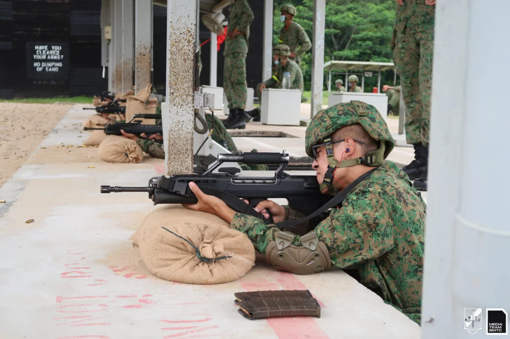On to the last high-key, in order to pass you have to hit at least 16 of 32 shots. Its very unlikely that you will fail this components as long as you're present, as even if you don't pass on the first attempt you will keep repeating the firing until you hit the passing threshold. For the ambitious recruits the marksman threshold is 28 out of 32 shots (87.5%).
Do expect lots of waiting, since you will at the range the entire day waiting on your fellow recruits to complete their turn. In addition, you might come to realise that cleaning the rifle is more tedious than shooting it, BMTC is strict with the upkeeping of their weapons so cleaning it will take the better part of your day.
Standard Obstacle Course (SOC)
The SOC is a 12 part obstacle course designed to test your strength and agility while you're kitted up. Basically a Ninja warrior course with your SAR21.
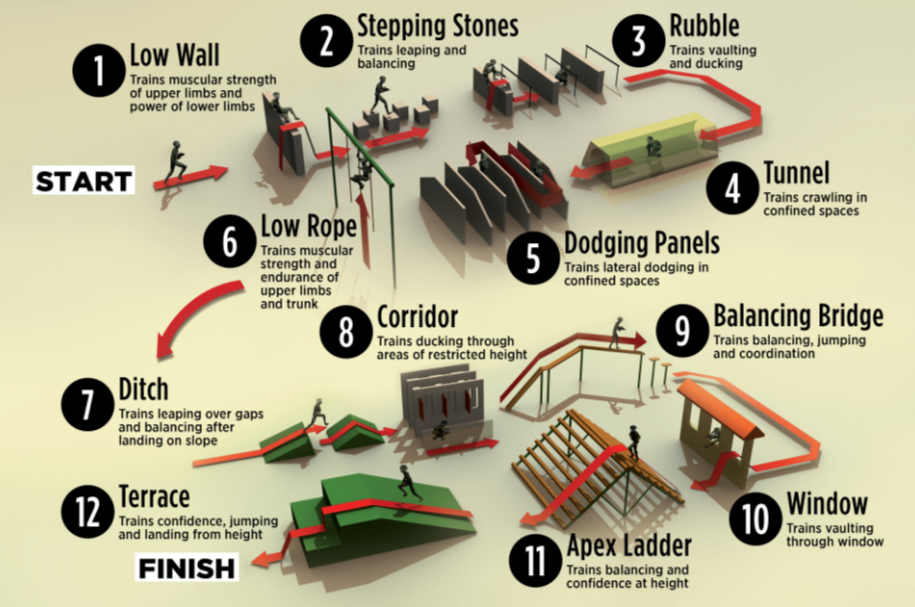Standard Obstable Course components:
- Low wall
- Stepping stones
- Rubble
- Tunnel
- Dodging Panels
- Low Rope
- Ditch
- Corridor
- Balacing Bridge
- Window
- Apex Ladder
- Terrace
If you can pass your IPPT the entire course should be manageable. The only 2 components that are challenging is the Low Wall and Low Rope, which conincidentally are not remotely low. The trick for the Low wall is to run at it and kick off the wall for elavation; As for the Low rope the secret is all in the feet, learn how to lock the rope between your boots and you will breeze thorugh this.
24km Route March
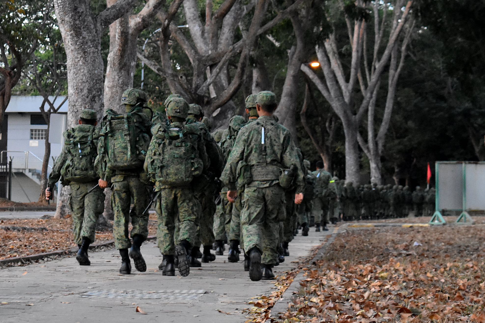Finally you've made it to the end of your BMT, to cap it all off you will embark on the 24km route march. The 24km route march is done progressively starting with a 4km march in vest slack, gradually building up to the entire 24km carrying your LBS and Field Pack. The pace is usually 45mins for every 4km (11:25/Km), followed by a 15mins break; Total elapsed time will take about 6 hours
There's no secret the route march, my only advise would be to keep yourself entertained either by talking to your buddies or singing songs. Before you know it, you'll see the break of dawn and will no longer be a recruit. If all else fails, just sound out to your commanders. This is not a high-key and will not affected your POP.
Posting Out - A Lottery
Congratulations on completing your BMT ! Your first of many milestones in your NS journey, its now time for the posting lottery. You will be notified of your posting order thorugh the NS portal : Typically on the Friday morning of your block leave. Remeber to take a screenshot as you'll need it to report to your new camp on the following Monday.
Want to compare postings with your mates but no idea what they actually entail? Here is all the main formations in the SAF:
Command School - SCS/OCS
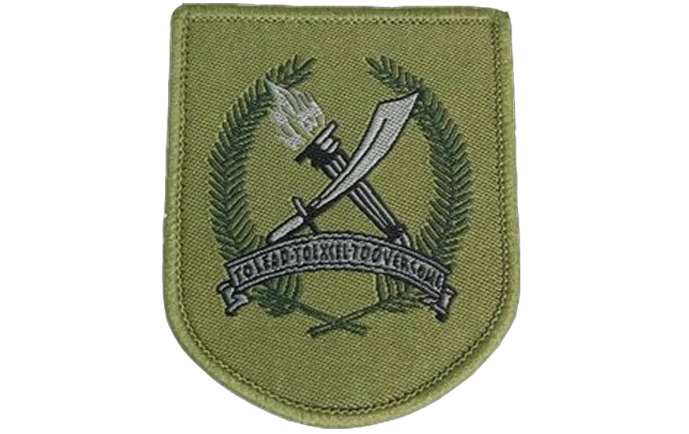 Welcome to command school cadets! Getting here is just the beginning of an ardous journey, attrition rates of 30% are common place. Mentally prepare yourself, for not everyone you meet will be there you when you're passing out.
- Sergeant Cadets (6 Months) | Pasir Labar Camp
- Officer Cadets (9 Months) | SAFTI Military Institute
Armour Formation
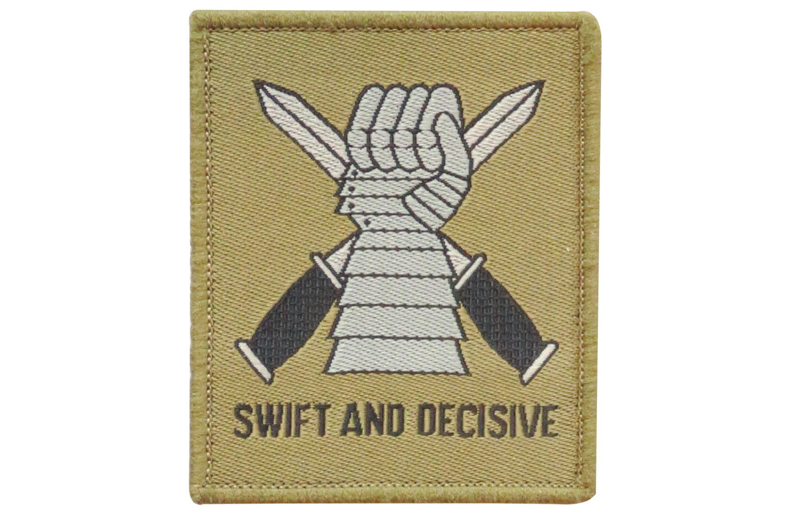 Armour formation: Where you get to play with Singapore's very own armoured carriers and tanks. But remember the bigger the weapon the bigger the responsility. This formation conducts a few overseas exercises to Australia and Germany which you can look foward to.
- Armour | Sungei Gedong Camp
Army Intelligence Formation
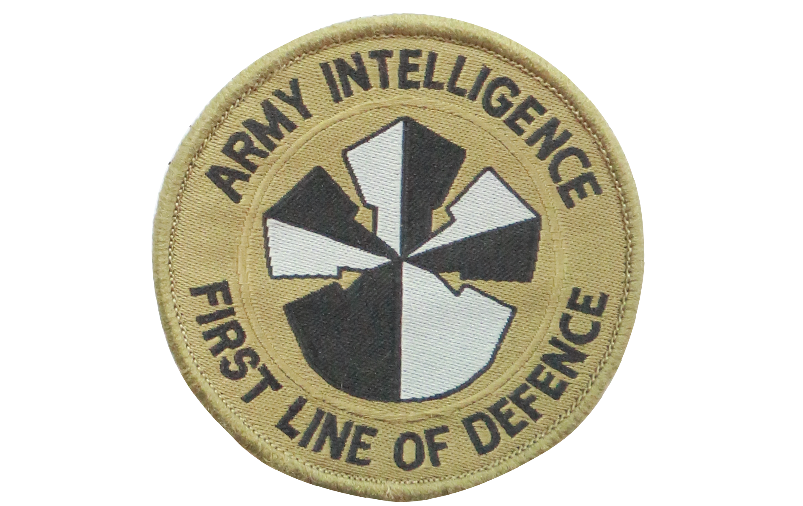 Don't your hopes up this patch is almost exclusively worn by regulars with a high clearance. This is where they do reconnaissance, surveillance and target acquisition (RSTA), through the use of unmanned aerial vehicles. Not to be confused with Signals or the nacent Digital Intelligence Service (DIS).
- Army Intelligence | Mandai Hill Camp
Army Medical Services Formation
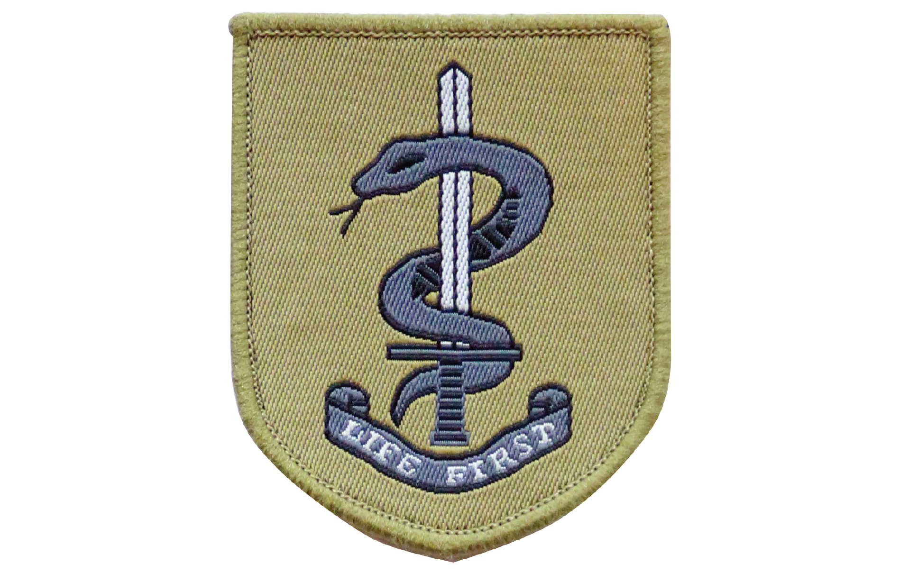These patches are for your Medical Officers (MO) and medics they form part of the SAF Medical Corps, which is headquartered in Nee Soon Camp. Should you get posted as a combat medic you'll learn how to draw blood, setup IV lines and care for the wounded.
- Army Medical Services | Nee Soon camp
Artillery Formation
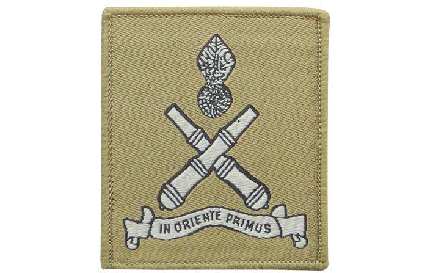 The Artillery's job is to support the infantry and armour divisions on the battlefield. They work closely with the aforementioned Army Intelligence to identify and effectivly take out targets. Fun Fact: the banner in the patch translates to "First in the East", since it's the oldest SAF formation.
- Artillery | Khatib Camp | Kranji Camp II
Combat Engineer Formation
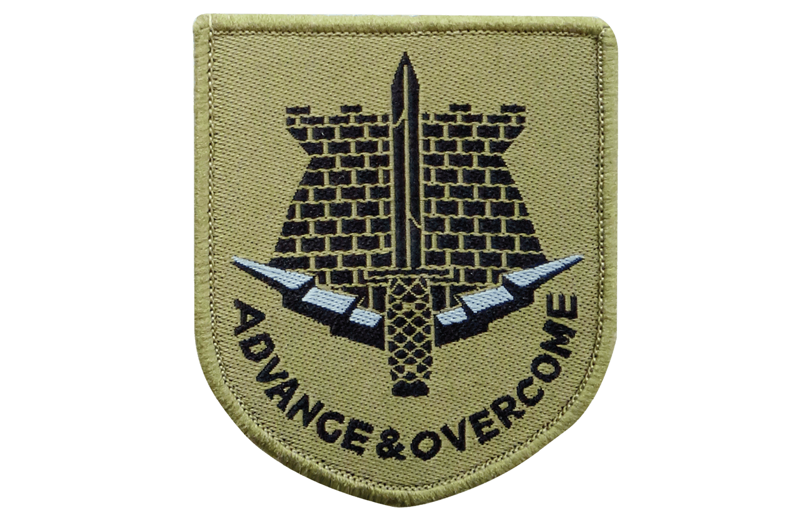 Combat Engineers specialize in providing mobility to combatants. They also do bomb disposal and guard against chemical, biological and radiological threats. Therefore they are constantly activated to secure national events or render humanitarian aid during natural disasters.
- Combat Engineer | Jurong Camp | Nee Soon Camp | Seletar Camp
Commandos Formation
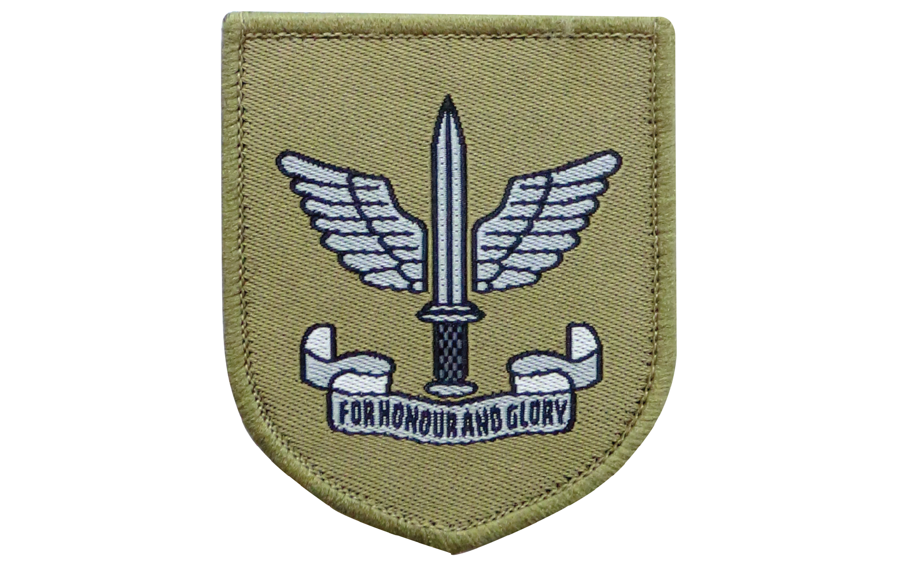 The revered commandos are the special forces of the SAF, it is made up of only 1 battalion (1 CDO BN) and they specialize in Infiltration, and conduct the most challenging course in the SAF the Ranger course. You would only be posted here as an ASA or Storeman , given thier mono-BMT.
- Commandos | Hendon Camp
CSSCOM Formation
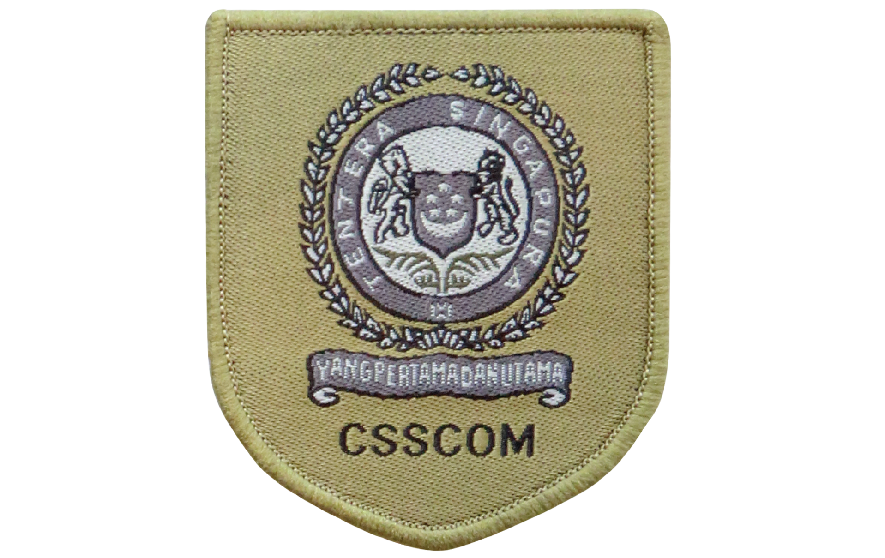 CSSCOM stands for Combat Service and Support Command, NSFs are posted here either as ASAs or SA. It is essentially a HQ which coordinates the logistics of the army, and they work closely with the Supply and Transport Units which are also headquartered in KC3.
- CSSCOM | Kranji Camp 3
Guards Formation
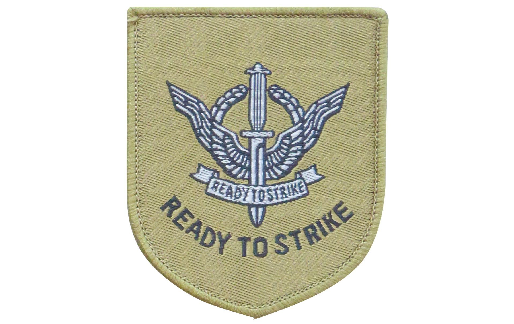The Guardsmen make up an elite fighting force, they specialize in rapid deployement with helicopters and are the first on the ground. You can identify them with the GUARDS tab they wear on their left sleeve or their Khaki berret. They are stationed at Bedok camp, it is where the dreaded Guards Conversion Course (GCC) takes place.
- Guards | Bedok Camp
Infantry Formations
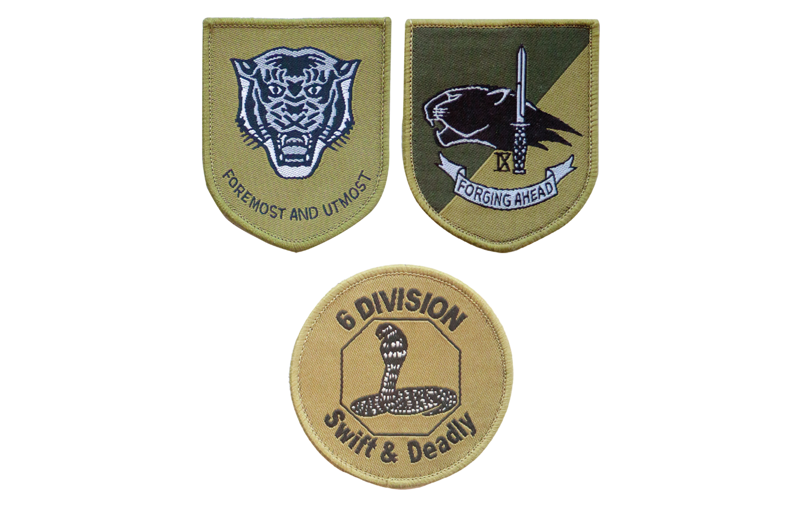This is the largest formation in the SAF, spanning 3 divisions and 5 active battalions all proficient in jungle warfare. The 3, 6, 9 div covers the entirety of Singapore in this order: West, Central, East respectively.
- 3 Div | West | Jurong Camp
- 6 Div | Central | Mandai Hill Camp
- 9 Div | East | Selarang Camp
Joint Formation
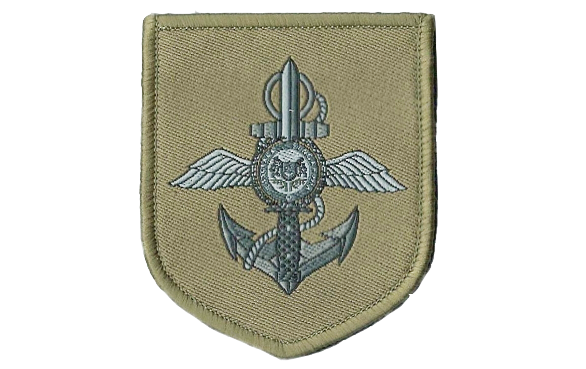 The Joint formation is a combination of all the 4 branches of SAF (Army, RSN, RSAF, DIS). This is an obscure formation donned exclusively by members of the Joint Staff and Chief of Defence office, they are most commonly found in MINDEF HQ.
- Joint | MINDEF HQ | CMPB
Maintenance Engineering Support Formation
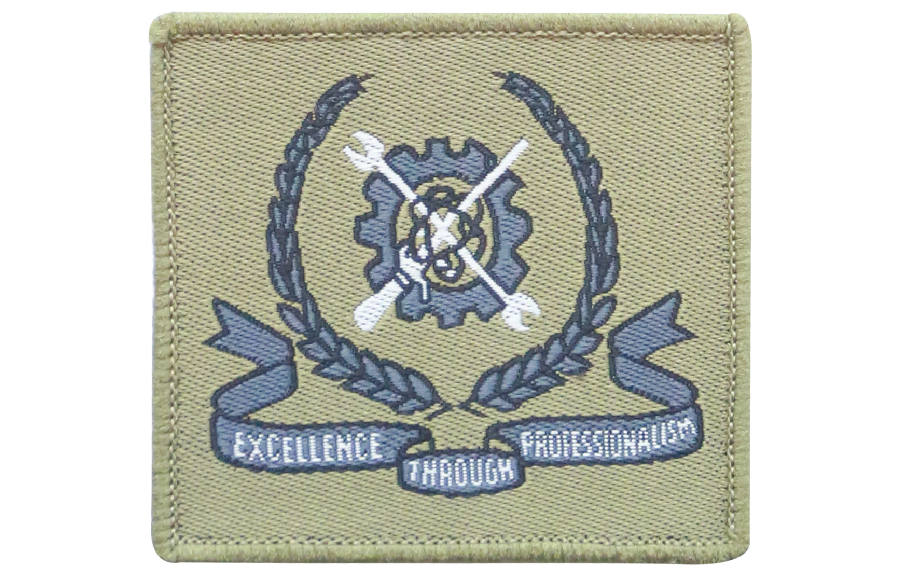 This fomration is responsible for providing the SAF with engineering support and ensuring equipemnt readiness. They work closely with DSTA and ST Kinetics to keep up with technological advnacements, and are usually staffed with Military Experts (ME).
- Maintenance Engineering Support | Kranji Camp
Military Police Formation
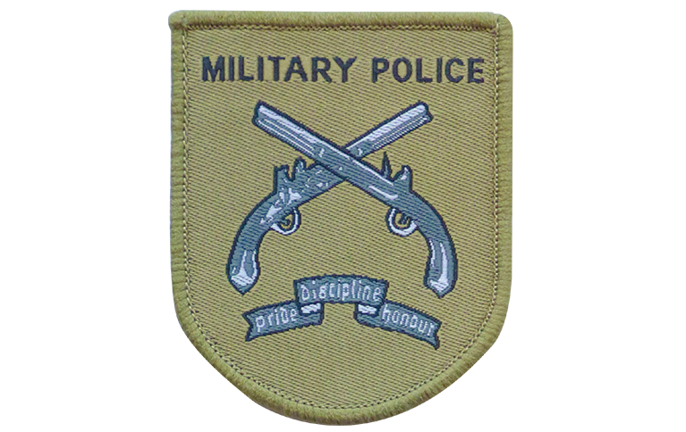The Military Police responsiblities includes: Upholding the standards of discipline within the SAF, Sercurity at MINDEF HQ, Guard mounting at Istana, and should the need arise - managing Prisoners of War (POWs). Expect a high level of Discipline, and get used to doing shift work.
- Military-Police | Mowbray Camp
People's Defence Force Formation
 2PDF is essentially internal-infantry, since this formation safeguards and maintains peace within Singapore. They guard Army camps and key installations (Jurong Island, Changi Airport) ; You will spend your first year as a Sercurity Trooper (ST) before undergoing full Infantry training for 5 months and finally guarding the aforementioned key-installations before ORD.
2PDF is essentially internal-infantry, since this formation safeguards and maintains peace within Singapore. They guard Army camps and key installations (Jurong Island, Changi Airport) ; You will spend your first year as a Sercurity Trooper (ST) before undergoing full Infantry training for 5 months and finally guarding the aforementioned key-installations before ORD.
- 2PDF | Clementi Camp
PERSCOM Formation
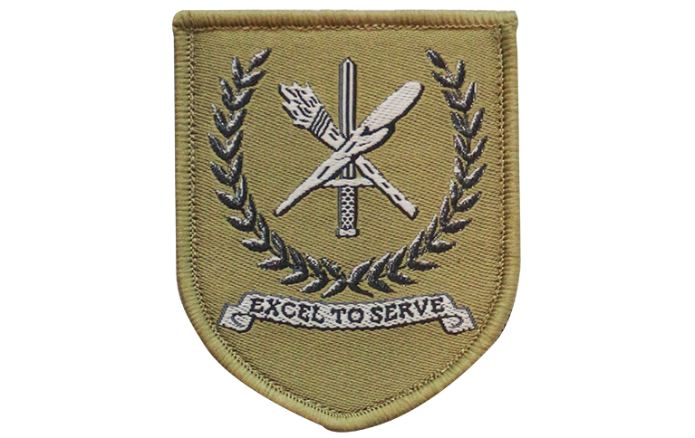 Personnel Command (PERSCOM) is essentailly HR for the army, they manage manpower needs, keep records of servicemans, and come up with HR policies for the SAF. Located at CMPB, the only vocation for Admin Support Assistants (ASAs). Fun fact: Founded in 2006, this is SAF's youngest formation.
- PERSCOM | CMPB
Signals Formation
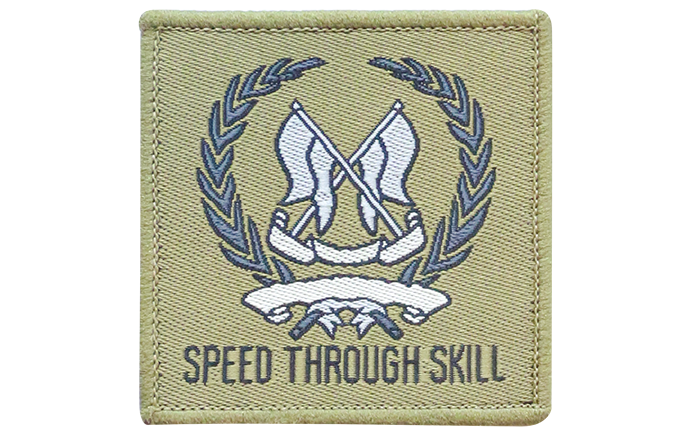Signals is the voice of the battlefield, they specialize in communications by leveraging techonology to keep everyone connected in a warzone. The Signals HQ and training institute is located at Stagmont Camp. Every one of the 3 Infantry Divisions has a Signals battalion supporting their combat operations.
- Signals | Stagmont Camp
Supply and Transport Formations
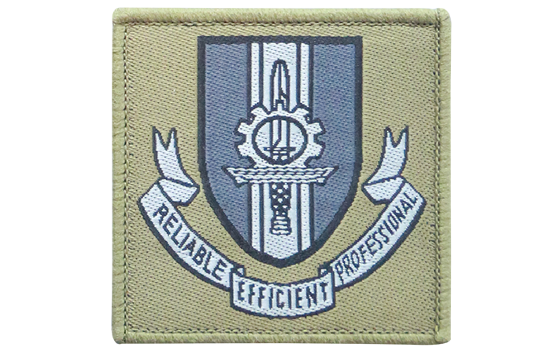 Supply and Tranport are the arteries of the SAF, they ensure that every solider gets everything they need. You can look foward to an all expenses paid driver's license by clocking 4000km before you ORD. Supply formation runs the Supply Transport School (STS) which is an 8 month specialist course.
- Supply | Kranji Camp 3
- Transport | Kranji Camp 3